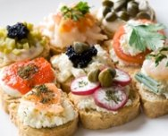

Roulés et toasts froids
Ingrédients
×
- 1 fromage frais
- 125 g de fromage blanc
- aneth
- ciboulette
- 1 citron vert
- sel
- poivre
- 4 pains lavash
- 1 concombre
- 5 tranches de truite ou saumon

Préparation
Étape 1
Lavash au saumon : mélanger 1 fromage frais, 125 g de fromage blanc, aneth, ciboulette, le jus d’1 citron vert, sel et poivre.
Étape 2
Tartiner 4 pains lavash. Ajouter 1 concombre épépiné en fines rondelles et 5 tranches de truite ou saumon en lamelles.
Étape 3
Rouler, filmer et laisser reposer 30min au frais.
Conseils
- Roulé : tortilla ou pain de mie, Saint Moret, jambon, ciboulette (tomates, salade).
- Club sandwich : jambon, leerdammer, salade.
Résumé
1 fromage frais
125 g de fromage blanc
aneth
ciboulette
1 citron vert
sel
poivre
mélanger
4 pains lavash
1 concombre
5 tranches de truite ou saumon
Tartiner
Rouler laisser reposer 30min